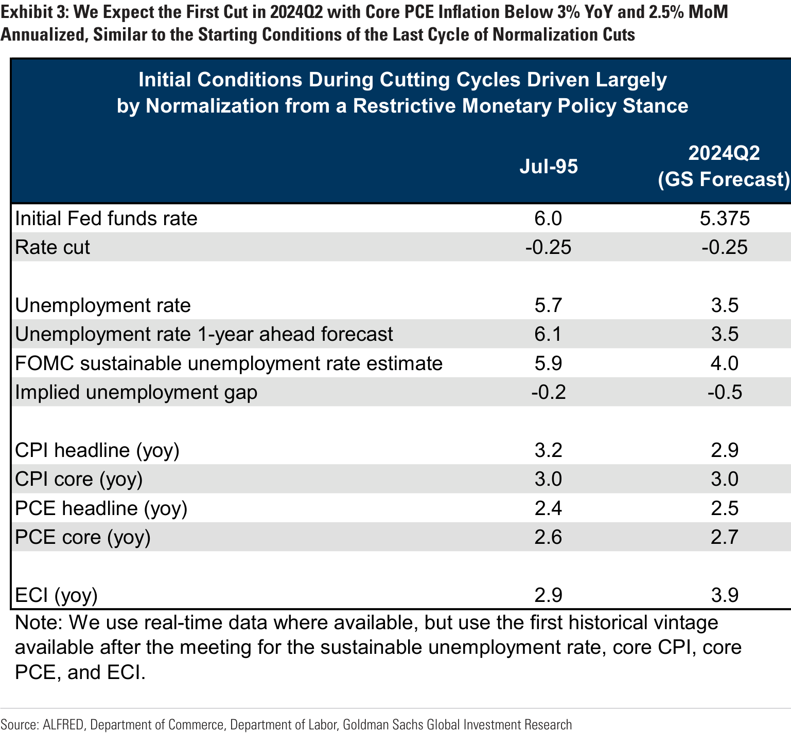

US Economics Analyst Rate Cuts (Mericle)
====================================================================================================
recessions fears have faded. We think it is appropriate for the yield curve to be inverted, but not quite as much as it is.
====================================================================================================
Rate Cuts
The soft July CPI report and dovish comments from New York Fed President John Williams this week supported our view that the FOMC is likely to skip a rate hike at the September meeting and ultimately decide in November that the core inflation trend has slowed enough to make a final hike unnecessary.
In this week’s Analyst , we discuss our views on possible rate cuts next year. Our baseline forecast calls for cuts to start in 2024Q2, proceed at 25bp per quarter, and end at 3-3.25%. But we do not see a strong need to cut and consequently we think there is a significant risk that the FOMC will instead hold steady.
Question 1: What would cause the FOMC to cut?
The FOMC could cut for any of three reasons: a recession, a moderate growth scare, or
a convincing decline in inflation. We have long seen a high threshold for cutting because Fed officials will want to minimize the risk that they could regret cutting if inflation stays too high. Last year we initially took the view that the FOMC was unlikely to cut until a growth scare emerged, but we softened our stance earlier this year and have since assumed that a convincing decline in inflation would probably be enough to prompt cuts. We made this change in part because Fed officials increasingly emphasized that once inflation came down, it would no longer be necessary or appropriate to keep the funds rate so high relative to estimates of the neutral rate. The cuts in our forecast are driven by this desire to normalize the funds rate from a restrictive level once inflation is closer to target, not by a recession.
Exhibit 1: The Latest Inflation Data Support Our Expectation That the Core Trend Will Have Slowed Enough by November for the FOMC to Conclude That a Final Hike Is Unnecessary
====================================================================================================
Question 2: When will the FOMC deliver the first rate cut?
We expect the first rate cut in 2024Q2. By that point, we expect core PCE inflation to have fallen below 3% on a year-on-year basis and below 2.5% on a monthly annualized basis, and wage growth to have fallen below 4% year-on-year. Those thresholds for cutting align roughly with the annual forecasts in the FOMC’s Summary of Economic Projections and the conditions at the outset of the last cutting cycle motivated by an intent to normalize from a restrictive policy stance as inflation came down in 1995.
Exhibit 2: Our Baseline Forecast Calls for Rate Cuts Without a Recession Because Once Inflation Comes Down, the Funds Rate Will Not Need to Remain High Relative to Recent History and Estimates of Neutral
====================================================================================================
Question 3: How confident are you that the FOMC will cut next year?
Exhibit 3: We Expect the First Cut in 2024Q2 with Core PCE Inflation Below 3% YoY and 2.5% MoM Annualized, Similar to the Starting Conditions of the Last Cycle of Normalization Cuts
====================================================================================================
Question 4: But doesn’t the FOMC have to cut the funds rate as inflation falls to prevent the real funds rate from rising and weakening the economy?
Exhibit 4: Inflation Expectations Have Already Normalized Most of the Way to Target-Consistent Levels, Meaning That There Is Little Room for a Further Decline to Boost Real Rates
====================================================================================================
Exhibit 5: Adjusting Our Financial Conditions Index for Inflation Does Not Change the Implied Impulse to GDP Growth by Much
====================================================================================================
Question 5: How quickly will the FOMC cut interest rates?
Exhibit 6: Fed Officials Have Put Different Degrees of Emphasis on the Real Fed Funds Rate Over Time
====================================================================================================
Question 6: At what terminal rate will the cutting cycle end?
Exhibit 7: We Have Penciled in 25bp of Cuts Per Quarter but Are Uncertain About the Pace and Would Expect It to Be Faster If a Growth Scare or a Recession Arises

====================================================================================================
Question 7: What do your views imply about the front end of the yield curve?
Exhibit 8: We Expect the Funds Rate to Stabilize at 3-3.25%, Not the FOMC’s 2.5% Longer Run Estimate, in Part Because We Think Neutral Is Higher Than Was Widely Thought Last Cycle
====================================================================================================
David Mericle
Exhibit 9: Our Views Remain a Bit More Hawkish Than Market Pricing on a Like-to-Like Probability-Weighted Basis, Though the Gap Has Narrowed as Recession Fears Have Diminished
====================================================================================================
The US Economic and Financial Outlook
====================================================================================================